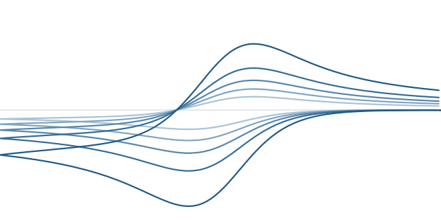
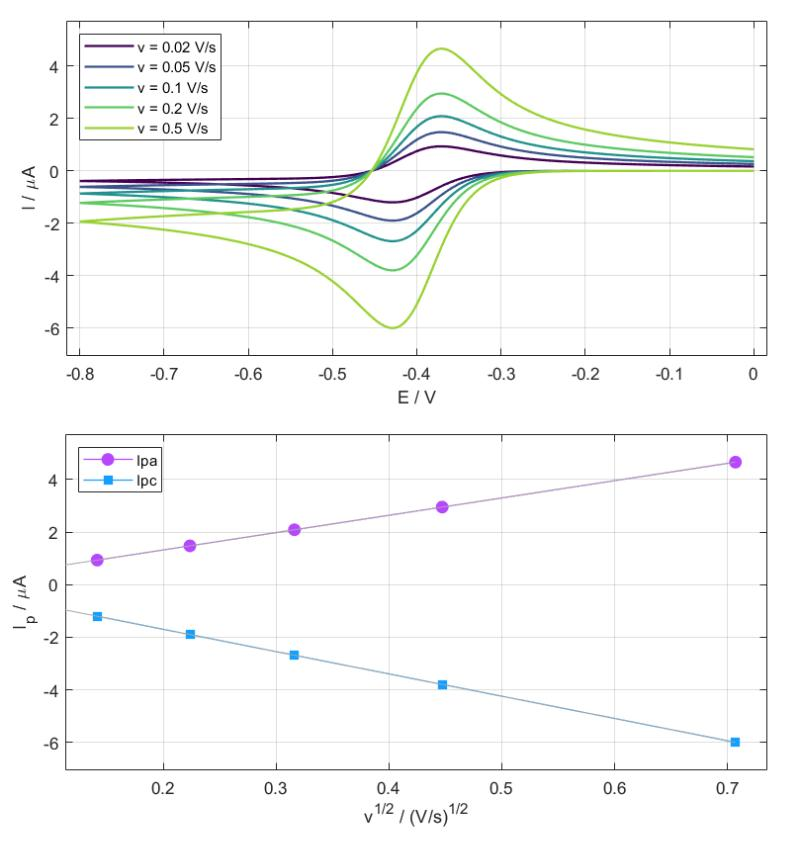
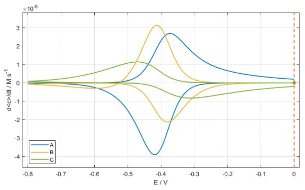
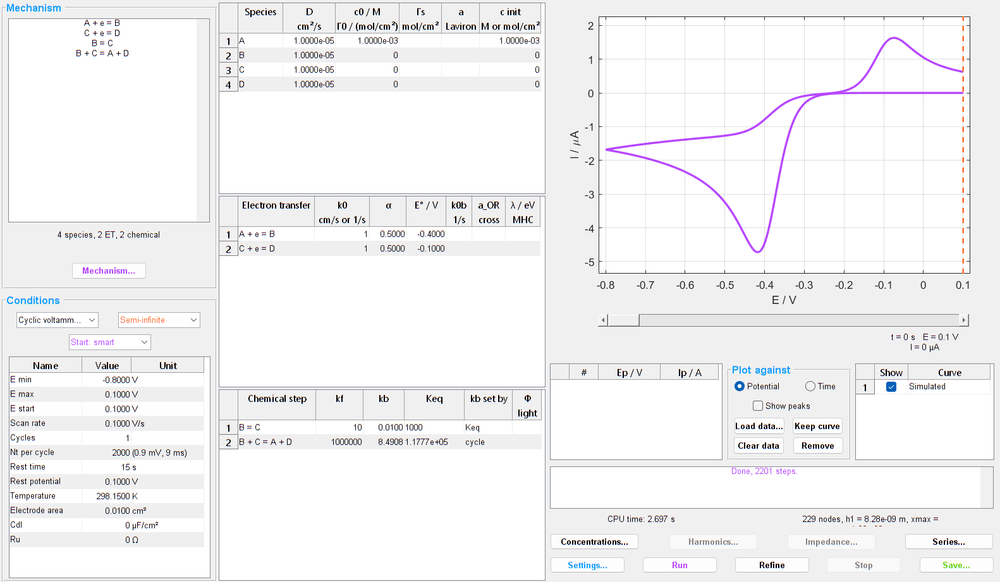

CVSim
Simulation of voltammograms and electrochemical mechanisms
Academic software, free of charge, for Windows and Linux. No MATLAB licence required.

A + e = B
B + C = A + D
CVSim computes the electrochemical response of a mechanism written as one writes it on the board. Diffusion, electron transfer, solution chemistry, adsorption, ohmic drop and double-layer capacitance are solved together, on a space grid placed automatically.
Telling mechanisms apart
A single voltammogram can be reproduced by more than one mechanism. CVSim is built to tell them apart: it computes series (scan rate, concentration, rate constant…) and sets them against the same series measured.
In practice
- mechanism typed as free text, units checked, equilibrium constants derived from thermodynamic cycles
- impossible values refused, unusual ones flagged
- current, concentration profiles and surface concentrations at every instant
- every result exported as a text file, with a picture of the window

What CVSim simulates
Mechanisms
- Butler-Volmer or Marcus-Hush-Chidsey electron transfer
- concerted transfers between solution and surface
- first- and second-order coupled chemistry: catalysis, dimerisation, disproportionation
- adsorbed species: Langmuir and Frumkin isotherms, Laviron interactions
- mixed steps between a dissolved and an adsorbed species
- electrochemiluminescence: excited states, emission yield, photons per electron
Electrodes and cells
- planar, spherical, hemispherical or cylindrical electrode, down to microelectrodes at steady state
- semi-infinite diffusion, stagnant layer, closed thin layer, rotating disk
- uncompensated resistance and double-layer capacitance
- initial state as entered or brought to equilibrium
- thermodynamic limit for fast equilibria
Techniques
- cyclic and linear sweep voltammetry
- single and double potential step
- square wave voltammetry
- differential pulse voltammetry
- ac voltammetry and its harmonics
- impedance spectroscopy
Analysing, and comparing with measurements
- Series over any parameter, with their derived quantities: Ip against v1/2 or v, log Ip against log v, Ep and ΔEp, Nicholson’s peak ratio, Nicholson’s ψ and k0, convolution and deconvolution, Levich plateaux and the Koutecký-Levich line.
- Measurements overlaid: BioLogic EC-Lab, CH Instruments and Metrohm Autolab files, or plain columns of numbers. The same quantities are taken from measurements and simulations, and the gap between the two families is quantified.
- A mechanism kept on screen: a frozen series stays as the reference while a constant or a step is changed.
Spectroelectrochemistry
In a thin layer or a stagnant layer, CVSim gives the mean concentration of each species over the thickness of the layer, and its time derivative. These are what the absorbance, or its derivative, follows in spectroelectrochemistry: the simulation compares directly with the optical measurement.

Validated
Every version passes more than 500 automated checks. Currents are compared with closed-form solutions: Randles-Ševčík, Cottrell, Laviron, thin layer, Levich plateau, Randles impedance, square wave and differential pulse. Conservation of matter and charge is checked every time.
Numerical method
Finite differences on an expanding grid, sized automatically from the problem; second-order implicit scheme (BDF2); Newton’s method on the coupled system, sparse factorisation. The Refine command measures how far the curve moves when the grid is refined.
Getting started
- twenty-three example studies shipped with the program, one per capability, each saying what to look at
- a user guide in French and English: every window and every control, the physical model, the numerical method, the references
- interface in English

Obtaining CVSim
CVSim is free of charge for everyone, students and researchers alike. It is distributed as 64-bit Windows and Linux executables that need only the free MATLAB Runtime: no MATLAB licence is required. Its licence of use, free of charge, allows it to be installed on as many computers as wished and passed on unchanged; it may not be modified. The demo version needs no formality; the full version is granted, free of charge too, to users registered with an academic address.
CVSim comes with absolutely NO WARRANTY.
To obtain CVSim, write to the developers at echem-tools@univ-angers.fr.
Acknowledging CVSim
If CVSim contributes to a publication, a thesis or a funded project (ANR, ERC, a European programme…), the authors would be grateful for a mention, for instance in the acknowledgements:
Simulations were carried out with CVSim (O. Alévêque and E. Levillain, MOLTECH Anjou, UMR 6200 CNRS, University of Angers), software free of charge, available on request from echem-tools@univ-angers.fr.
Data
At the first start with a network, CVSim asks whether it may send an anonymous usage record; it is sent only if you agree, and the choice can be changed at any time in Settings. The record holds the date, the version, the operating system, how CVSim runs, the country of the regional settings and an installation number drawn at random — no name, no IP address, no computer name, nothing about your work. Its only use is to know how many installations use CVSim.
For the full version, the academic address entered in CVSim stays on the computer: CVSim downloads the list of registrations, which holds only fingerprints of the addresses, never the addresses themselves, and compares on the spot. A registration holds for one installation, named by a code computed from the identifier the system gives the computer (that identifier is never sent), distinct from the number of the usage record. Without a connection, the full version stays active for seven days after the last check.
This site sets no cookie, loads nothing from another site and measures no audience.